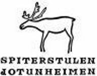

X
FJELL OG FRITID
Fjell og fritid er ein fullsortiment sportsbutikk med fokus på fjell og friluftsutstyr. Butikken ligg midt i smørauget i Lom med det kjente Bakeriet i Lom som nærmaste nabo.
Vi har fleire års erfaring med å rettleia deg til val av klede, sko og anna utstyr. Vi satsar på kjende og gode merkevarer som er kjent for å sette kvalitet i høgsete. Her vil finne merker som ikkje er å oppdrive i alle andre sportsbutikkar.
Fjell og fritid har eigen skoavdeling med alt frå fjellsko til løpesko og fritidssko.
Kom gjerne og besøk oss for å sjå på vårt utval og kanskje har vi noko som fristar.
Telefon: +47 61 21 17 99
post@fjellogfritid.no
http://fjellogfritid.no/

X
FOSSBERG HOTELL
Tlf. +47 61 21 22 50
Overnatting frå 750,-
Sesong: 3. januar – 22. desember
booking@fossberg.no
www.fossberg.no

X
FOSSHEIM HOTELL
Tlf. +47 61 21 95 00
Overnatting frå 650,- pr person (dobbeltrom)
Sesong: 01.02 – 17.12
resepsjon@fossheimhotel.no
www.fossheimhotel.no

X
GJENDESHEIM TURISTHYTTE
Tlf. +47 61 23 89 10
Overnatting frå 755 pr. person inkludert middag, frokost og matpakke.
Sesong: 18.02 – 1.05
gjendesheim@dnt.no
www.gjendesheim.no
X
Glitterheim
Tlf. +47 61 23 18 33
Mob. +47 900 15 529
+47 994 25 915
Overnatting frå 187,- (DNT-medlem). 250,- (Ikke DNT-medlem)
Sesong: 24.03 – 23.04.
gl-heim@online.no
www.glitterheim.dnt.no

X
Høgruta i Jotunheimen
Jotunheimen Haute Route er ein 5 dagars topptur i hjartet Jotunheimen nasjonalpark. Ruta går over minst åtte brear og sju 2000-metertoppar, inkludert Glittertind og Galdhøpiggen. Overnatting skjer på betjente hytter. Kvar etappe er ca 15 km, med 1000 – 1500 meter stigning.
Guiding
www.jotunheimenhauteroute.no/

X
JOTUNHEIMEN FJELLSTUE
Tlf. +47 61 21 29 18
Overnatting frå 795,- pr pers. (dobbeltrom)
Sesong: Ope i helger og langhelger* frå 28. april.
*pinse og 17.mai)
resepsjon@fossheimhotel.no
www.jotunheimen-fjellstue.no
X
JUVASSHYTTA
Tlf. +47 61 21 15 50
Overnatting frå 440,-
Sesong: frå 16. mai og resten av helgene i mai.
post@juvasshytta.no
www.juvasshytta.no

X
KROSSBU
Tlf. +47 61 21 29 22 | Mob. +47 91 36 38 55
Overnatting frå 320,- (overnatting med frukost)
Sesong: 07.04 – 30.09, med høve for fyrste veka i oktober ved bestilling seinast 1. august.
vole@krossbu.no
www.krossbu.no

X
LEIRVASSBU
Tlf. +47 61 21 12 10
Overnatting frå 395,- pr pers. (overnatting og frukost)
Vinter/vårsesong: 30. mars – 01. mai
Sommarsesong: 23. juni – 18. september
leirvassbu@topofnorway.no
www.leirvassbu.no
X
LOM
Lom er ei fjellbygd i Oppland med ca. 2350 innbyggarar og heile tre nasjonalparkar,
Jotunheimen, Breheimen og Reinheimen. Over 90% av kommuna sitt areal ligg på over 900
moh. Og vi kan freiste med dei to høgste fjella i Noreg: Galdhøpiggen og Glittertind.
Bygda utgjer eit krysningspunkt mellom aust og vest og på under to timar (sommarstid) kan
du forflytte deg frå høgfjellet i Jotunheimen til verdas lengste fjord, Sognefjorden.
Lom sentrum, Fossbergje, er ein av fem tettstadar i Noreg som har status som
nasjonalparklandsby, og er ein naturleg innfallsport til nasjonalparkane Jotunheimen,
Breheimen og Reinheimen.
Nasjonalparklandsbyen ligg flott til under mektige Lomseggen. Midt i sentrum renn elva
Bøvra kvit og vill utfor Prestfossen. Namnet Fossbergje kjem av berga som stikk fram attmed
fossen. Her har bygdasenteret vakse fram på båe sider av elva. Fyrste private aktiviteten i
området var eit kvernbruk rundt 1770, fyrste landhandelen kom i 1870 der Kiwi held til i dag.
X
MEMURBU
Tlf. +47 460 16 200
Overnatting frå: 200,- pr pers. (overnatting uten mat) 850,- pr pers. (overnatting og mat).
Sesong: 30.03 – 17.04
post@memurubu.no
www.memurubu.no

X
NORDAL TURISTSENTER
Tlf. +47 61 21 93 00
Overnatting frå: Hytter frå 130,- pr pers.
Hotellrom frå kr. 675,- pr pers i dobbeltrom.
Sesong: 07.04 – 01.10
booking@nordalturistsenter.no
www.nordalturistsenter.no

X
RAUBERGSTULEN
Tlf. +47 61 21 18 00
Overnatting frå: 250,- pr pers. (hytte)
Sesong: medio mai – utover.
post@raubergstulen.no
www.raubergstulen.no

X
RØISHEIM
Tlf. +47 61 21 20 31
Mob. +47 905 50 633
Overnatting frå: 975,-
Sesong: 28.04 – 01.10
post@roisheim.no
www.roisheim.no

X
SOGNEFJELLSHYTTA
Tlf. +47 61 21 29 34
Overnatting frå 350,-
Sesong: påska – midt i september.
post@sognefjellet.no
www.sognefjellet.no

X
SPITERSTULEN
Tlf. +47 61 21 94 00
Overnatting frå 450,-
Vintersesong: 1. mars – 1. mai
Sommarsesong: 1. juni – ca. 10. oktober
post@spiterstulen.no
www.spiterstulen.no
